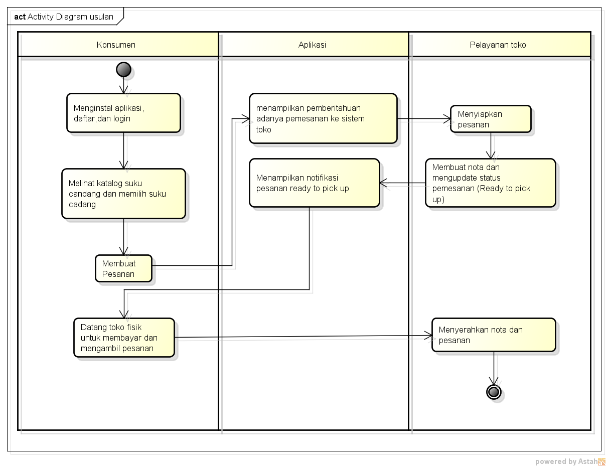

NIM : 1811500101
Nama : Gerry
Kelas : TI6A
Hasil saya menyadur pertemuan ke-3 :
- Analisa sistem usulan adalah Solusi dari masalah yang terjadi.
sistem yang kita usulkan dapat memberikan dampat bagi konsumen atau pelayannya
- Konsumen dapat menghemat biaya dan waktu
pelayan toko dapat diganti dengan aplikasi
- versi praktis, konsumen cukup membuka aplikasi dan memilih barang yang diinginkan.
- sequence diagram untuk membahas urut"an pada form (aktivitas aktor)
- Pada activity diagram berjalan percabangan nya bisa diminimalkan dengan adanya AD usulan.
- menggunakan database terpusat, untuk menyamakan stock pada aplikasi dan untuk datang langsung ke toko
- Kegiatan tanya bertanya dihilangkan dengan adanya aplikasi
Download Hasil Project Astah :
Download

Download Foto
Download